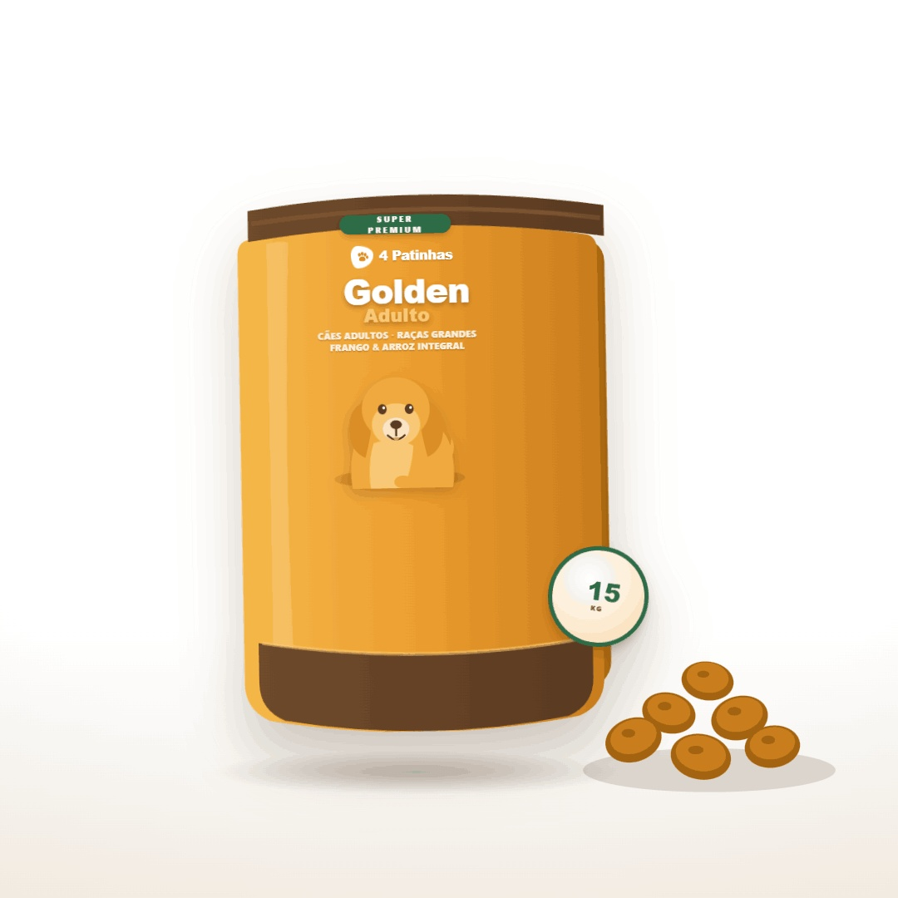
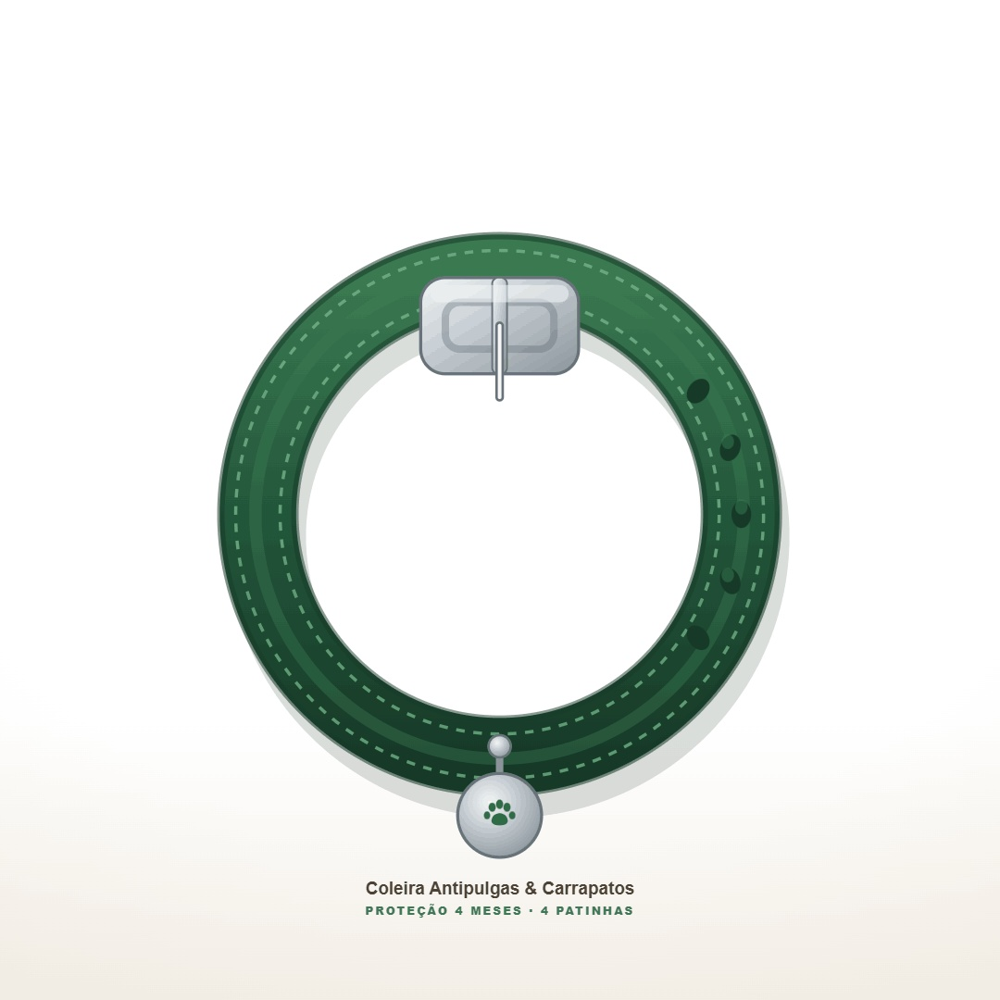

Ração Premium Golden Adulto 15kg

Seu cachorro vai adorar! Uma ração cheia de proteínas, ômega 3 e vitaminas que fazem toda a diferença no dia a dia. Energia de sobra, pelo brilhante e muito mais saúde para o seu melhor amigo.
Valor: R$ 189,90
Coleira Antipulgas e Carrapatos, proteção por 8 meses

Coloque no seu cão e esqueça a preocupação por até 8 meses. Resistente à água, segura para o dia a dia e disponível nos tamanhos P, M e G. Ideal para quem quer cuidar do pet sem complicação.
Valor: R$ 79,90